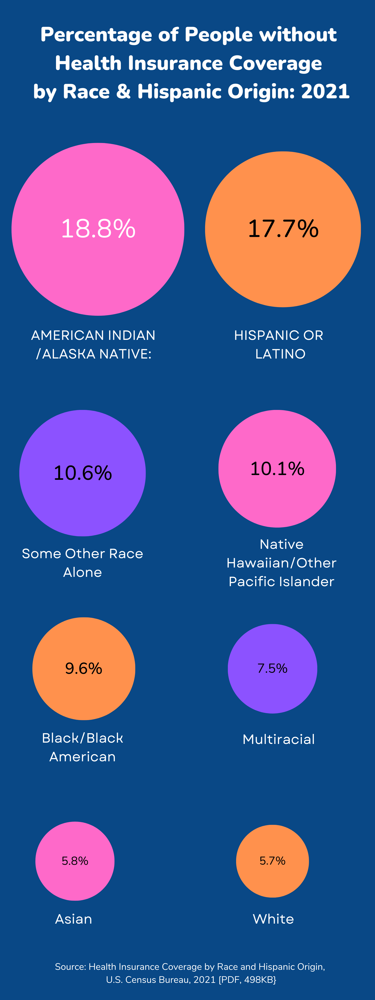

Fund Abortion Now! Issue 2.0
The fight for abortion justice is not new, but the conditions of our fight continue to change as the political landscape evolves. We need your ongoing, principled and steadfast commitment to funding abortion now more than ever.
But how did we get here? Some context:
In early 2022, anticipating the likely overturn of Roe v. Wade, a group of RG member leaders launched Fund Abortion Now!: a campaign to move $2 million to the National Network of Abortion Funds (NNAF) and its local and regional affiliates over 3 years.
When the Dobbs ruling arrived in June 2022, it quickly widened the existing disparities in access to reproductive care and abortion, particularly along the lines of class, race, and geography. It comes as no surprise that the demand for abortion has only increased since then. Abortion funds continue to fulfill an essential role in helping those most impacted by Dobbs–namely communities left behind by institutionalized violence and racial capitalism–access abortion care.
Since the launch of this campaign, we are proud to share that RG members, constituents, allies, and friends have pledged a total of $1,644,943 to our campaign partner NNAF and its local affiliates.
In the year following the Dobbs decision, abortion funds reported a 39% increase in requests for support to access abortions. However, despite an initial wave of rapid response funding (often called rage giving) for reproductive justice efforts in the immediate wake of the ruling, broader and more sustained support for this work has dwindled.
The bottom line: there is a massive need to continue mobilizing resources to frontline reproductive justice actors. Our campaign is back to ask you to re-commit to funding abortion, which you can do now in the following ways:
Renew your recurring financial support to NNAF and/or local abortion funds.
Increase your giving wherever and whenever you can–make it recurring if it is not already.
Strategize and prioritize your giving: focus on liberatory, Black-led reproductive justice organizing and abortion funds in the South.
Encourage your communities, colleagues, friends and family to do the same!
Action Steps
- Give general operating dollars directly to NNAF here.
- Give to NNAF’s Collective Power Fund here, which concentrates on funds in the South and Midwest, where it’s often most difficult to access abortion.
- Give directly to your local NNAF member Abortion Fund here and give to them directly.
Funding & redistribution best practices to keep in mind:
- Support long-term movement building with recurring funding (we recommend a 3 year commitment).
- Provide unrestricted general operating funding.
- If possible, avoid anonymous funding to destigmatize abortion and funding abortion access.
- In addition to funding the essential work of abortion funds, be sure to support other reproductive justice organizations (some of which are listed below).
You can also become an NNAF individual member to engage further with organizing and movement-building.
The Current Landscape
For nearly 50 years, Roe provided a baseline of legal protection for abortion in the United States. Of course, Roe was never enough; access to abortion was always governed by a person’s state of residence, financial status, and ability to navigate a complex web of obstacles created by state legislatures over the course of decades. Almost two years after Dobbs, the landscape of abortion legality across the country is even worse. Abortion is completely banned in 13 states (Alabama, Arkansas, Idaho, Kentucky, Louisiana, Mississippi, Missouri, North Dakota, Oklahoma, South Dakota, Tennessee, Texas and West Virginia)
State Abortion Bans Enacted in 2023
Many state legislatures with anti-abortion majorities prepared for Roe v. Wade’s end by passing their own trigger bans. Once the Dobbs decision was reached, they used those trigger bans to push for completely banning abortion. Other state legislative sessions banned abortion at specific gestational limits instead of outright bans.
- Florida: a 6-week abortion ban was signed into law on April 13, 2023, intended to go into effect following a ruling from the Florida Supreme Court on a case considering the legality of a 15-week abortion ban passed in 2022. That case may be decided in June; if the 15-week abortion ban is upheld, the 6-week ban will go into effect 30 days later.
- Nebraska: a 6-week abortion ban failed when one Republican legislator voted against it, earning national headlines; however, a ban on abortion at 12 weeks passed as an amendment to a ban on gender-affirming care and took effect on May 22, 2023.
- North Carolina: a 12-week abortion ban was ultimately enacted following a legislative override of a veto by Gov. Roy Cooper (D). The law is scheduled to go into effect on July 1, 2024.
- South Carolina: a 6-week abortion ban advanced through the legislature, but was stopped by a bipartisan group—the “Sister Senators”—whose commitment to blocking the ban countered the legislature's Republican supermajority. After Gov. Henry McMaster (R) called a special session, the abortion ban was signed into law on May 25, 2023, only to be temporarily blocked following a legal challenge. Abortion remains legal in the state while litigation continues.
- Utah: Gov. Spencer Cox (R) signed a law in March 2023 that would have mandated the closure of all abortion clinics in the state once the current clinic licenses expired, ending access to virtually all abortions across the state at that time. In May 2023, a judge temporarily blocked this law from taking effect.
- Wyoming: an additional abortion ban was enacted, despite the ongoing legal challenge to the state’s trigger ban, and it also faces legal challenges. Abortion remains legal while litigation continues.
The highest number of abortions in a decade occurred in 2023
Per reporting on their Monthly Abortion Provision Study data, the Guttmacher Institute estimates that the total number of abortions in the United States was 1.04 million in 2023, a likely undercount due to the study’s focus on abortions occurring within the formal health care system. This represents an 11% increase since 2020 and the highest estimated count in over a decade.
But as abortion fell out of headlines, these monumental efforts have faltered due a lack of sustained giving. As reported in January 2024, abortion funds nationwide have experienced a significant decrease in funding and numerous funds have had to resort to temporary closures, with some halting operations multiple times within the last year.
Reproductive Justice is...


Reproductive Justice and the Black Community

The very state of being Black in a racist society can cause high chronic stress and thus exacerbate existing health conditions. This leads to higher rates of pregnancy risks such as hypertension, preeclampsia, and hemorrhage, thus also increasing mortality rates for both Black folks and their babies.
Black women’s reproductive health has long been intervened by white supremacy, patriarchy, and capitalism. Even by controlling for class and education, Black women and birthing folks are 3x more likely to die from pregnancy than their white counterparts in the U.S.
The American Society of Anesthesiologists conducted an 11-year analysis of over 9 million hospital deliveries which found that Black women had a 53% higher risk of dying in a hospital setting during childbirth, regardless of income level, insurance type, any other social driver of health.
31% of Black women who delivered in hospitals reported they were poorly because of a difference of opinion with their caregivers about the right to care for themselves or their baby.
How The Breakdown of Roe v. Wade Harms Black Folks
For centuries, Black America has experienced a dangerous maternal health crisis. Black women are 3-4 times more likely to die from pregnancy-related causes, and more than twice as likely to experience severe maternal morbidity. According to the U.S national Institutes of Health Office of Research on Women's Health, the incidence of severe maternal morbidity for Black women was 166 percent higher from 2012 to 2015 than it was for white women.
During 2017–2019, the pregnancy-related mortality ratios (PRMRs) were as follows:
- 62.8 deaths per 100,000 live births among non-Hispanic Native Hawaiian or Other Pacific Islander persons.
- 39.9 deaths per 100,000 live births among non-Hispanic Black persons.
- 32.0 deaths per 100,000 live births among non-Hispanic American Indian or Alaska Native persons.
- 14.1 deaths per 100,000 live births among non-Hispanic White persons.
- 12.8 deaths per 100,000 live births among non-Hispanic Asian persons.
- 11.6 deaths per 100,000 live births among Hispanic persons.
It's important to pay attention to how the Black maternal health crisis is framed, particularly in the drivers behind it. Some reports and conversations tend to frame that being Black is inherently the issue, but according to Dr. Joia Crear-Perry, medical racism is the one of the largests contributors. According to the World Health Organization, a risk factor is any characteristic or exposure that increases an individual’s likelihood of developing a disease or injury. Racist policies are grounded in ideas and social structures that are unwilling to acknowledge—and thus work to prevent—Black women’s deaths. Despite our nation’s vast wealth and the tremendous amount of resources spent on health care services, women in the United States die within a year of childbirth more than women in any other nation with an advanced economy. Despite representing 4% of births, Black infants account for over 15% of infant deaths. Black maternal mortality accounts for half of maternal deaths in the city (California Preterm Birth Initiative).
Research has shown that Black women can't buy or educate their way out of dying in childbirth or having their babies die. Black women who live in affluent neighborhoods, receive prenatal care in the first trimester, are normal weight, and have advanced degrees are still more likely to die or have their baby die than white women in poor neighborhoods who are obese, have no prenatal care and no high school diploma. Preterm births, the second leading cause of infant mortality in the U.S., are highest amongst Black, Pacific Islander, and Native newborns nationwide (CDC). A 2021 study analyzing preterm birth disparities (JAMA) found that historic redlining practices play a role in Black maternal health today.
According to the CDC, over 60% of pregnancy-related deaths in America are preventable. For every woman who dies, 70 experience "near misses": cases of severe maternal morbidity that lead to significant short- or long-term consequences to a woman's health. The United States is the only developed country with a rising maternal mortality rate. While maternal mortality rates declined 44% around the world from 1990-2015, maternal mortality in the United States increased by 16.7%. In fact, the only countries with rising maternal death rates are the United States, Afghanistan, and Sudan.
Don't Abandon the South
U.S. mortality rates increased between 2000–2014, rising from 18.8 maternal deaths to 23.8 maternal deaths per 100,000 births—a staggering 26.6% increase and around 700 maternal deaths annually U.S. is the most dangerous industrialized nation in which to give birth; U.S. women are more likely to die from pregnancy-related complications than women in 45 other countries, including non-industrialized nations. Tragically, up to 60% of these pregnancy-related deaths are preventable. Black women are 3–4 times more likely to die from pregnancy-related causes, and more than twice as likely to experience severe maternal morbidity. White women’s maternal mortality rate is 13 deaths per 100,000 live births, while pregnancy-related mortality rate for Black women is 42.4 deaths per 100,000. Black LGBTQI+ individuals, particularly Trans people, face additional barriers to care, including stigma, discrimination, and mistreatment, which can result in delaying or avoiding health care. The multiple factors contributing to poor maternal health for Black women include:
- Lack of access to high-quality, evidence-based, culturally-competent, and medically appropriate care that meets the unique needs of Black women and their communities
- Shortage of providers and health care organizations (including contraception and pregnancy-related services) accessible to Black women, resulting in high rates of chronic health conditions
- Social, economic, and environmental stressors—including racism, poverty, criminalization, reproductive coercion, violence, and environmental toxins—that harm Black women’s health on multiple levels.
- Inadequate health care infrastructure, high costs, and lack of insurance all impede Black women’s ability to access timely, comprehensive care.
- While the ACA and Medicare expansion has allowed millions of Black women to access prenatal care, labor, delivery, and post-partum care, too many still lack coverage, especially in states that didn’t receive Medicaid expansion
- Uninsurance rate among Black folks declined from 19% in 2013 to 11%
- 14% of Black women are uninsured
- Lack of health coverage and barriers to high-quality care → above average rates of diabetes, obesity, hypertension, and C-section deliveries, all risk factors for health complications during pregnancies and childbirth
- Black women’s lack of access to timely and culture affirming care means they’re less likely to have routine screenings and treatment for chronic conditions
- Without those screenings, the likelihood of injury and death during pregnacy and childbirth increases
